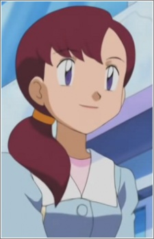

| |
 |
Greta | Pokemon Advanced Generations | |
|  | Millie | Pokemon Advanced Generations | |
 |
Squirtle | Pokemon Mystery Dungeon: Team Go-Getters Out of the Gate! | Squirtle is a Pokemon from the Kanto region. Squirtle is the water type starter that a trainer can choose in the Kanto region. It can spray foamy water from its mouth with great accuracy. Squirtle's shell is powerful tool for its protection. |